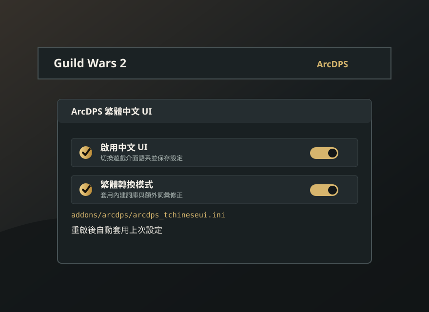

主要功能
- 提供 ArcDPS 外掛形式的中文 UI 支援。
- 將遊戲畫面切成簡體中文，再轉換為繁體中文。
- 可切換中文 UI 與繁體轉換模式。
- 記住設定，重啟遊戲後自動套用。
- 簡轉繁不可用時降級載入，保留簡體中文與偏好設定。
Guild Wars 2 ArcDPS Plugin
下載 arcdps_tchineseui.dll，讓 Guild Wars 2 介面使用中文。外掛會先將遊戲畫面切換成簡體中文，再進一步轉換與修正為繁體中文。
本站是 m21248074/GW2-ArcDPS-TChineseUI 的 fork 維護頁面，延續原作者繁化發布並補上設定保存、精確初始化診斷與自動化 Release。目前穩定版為 v1.0.0-fork.5。

arcdps_tchineseui.dll。arcdps.log 顯示的實際載入位置；常見位置是遊戲根目錄或 bin64，請勿兩邊都保留一份。Shift + Alt + T 開啟 ArcDPS。外掛會將設定寫入：
addons/arcdps/arcdps_tchineseui.ini目前保存 chinese_enabled 與 trad_mode_enabled。
簡轉繁暫時不可用時仍會保留偏好，供下次啟動重新嘗試。
arcdps.log 顯示載入的是剛安裝的 arcdps_tchineseui.dll。Shift + Alt + T 叫出 ArcDPS 視窗。正常套用保存的中文與簡轉繁設定時，arcdps.log 應出現：
[trad/enable] enabled
[init/complete] ready
[language/queue] language-id=5
[language/apply] completed
若出現 [trad/<階段>] unavailable，代表外掛已降級載入；簡體中文仍可使用，簡轉繁選項則會停用並顯示原因。若外掛無法載入，v1.0.0-fork.5 起會以 [init/<階段>] 標示確切失敗位置。
最新版本會在 GitHub Releases 提供 DLL 與 ZIP。若只想安裝外掛，下載 arcdps_tchineseui.dll，完全關閉遊戲後再放到 arcdps.log 所指的實際載入位置。
完全關閉 Guild Wars 2 後，將實際載入位置的 DLL 換回先前備份或上一個可正常使用的 Release。通常可以保留現有 INI。arcdps 與其擴充為第三方工具，不受 ArenaNet 支援，使用風險請自行負擔。
TChinese UI 原始專案來自 m21248074/GW2-ArcDPS-TChineseUI。 原作者在巴哈姆特發布的 TChinese UI v1.0.0 介紹，說明此外掛會將遊戲畫面改成簡體中文，並以此為基礎進一步翻譯成繁體中文。
查看原作者巴哈貼文